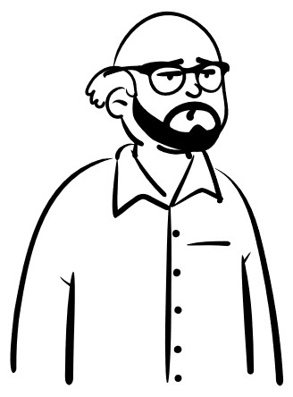

Tipos y fuentes de datos
Los datos constituyen la materia prima de cualquier proyecto de análisis de datos. Antes de analizarlos, es necesario identificar qué información se requiere, cómo está representada y de dónde puede obtenerse.
Los datos son observaciones, mediciones o registros que describen un fenómeno de interés.
Pueden representar información de distinta naturaleza y almacenarse de diferentes formas.
Ejemplos
Los datos pueden clasificarse según la información que representan.
| Tipo | Ejemplos |
|---|---|
| Numéricos | Edad, peso, salario |
| Texto | Nombre, correo electrónico, comentario |
| Booleanos | ¿Aprobó?, ¿Está activo?, ¿Tiene membresía? |
| Fecha y hora | Fecha de nacimiento, hora de llegada, fecha de compra |
| Multimedia | Fotografía, grabación de audio, video |
En estadística, los datos suelen clasificarse según las técnicas utilizadas para analizarlos.
| Tipo | Ejemplo |
|---|---|
| Numéricos | Edad, peso, temperatura |
| Categóricos | Sexo, ciudad, color |
| Temporales | Fecha, hora, series de tiempo |
Cuando los datos se almacenan o procesan en un lenguaje de programación, cada valor debe representarse mediante un tipo de dato específico.
| Tipo | Python | Ejemplo |
|---|---|---|
| Entero | int |
25 |
| Decimal | float |
18.5 |
| Texto | str |
"Juárez" |
| Booleano | bool |
True |
| Fecha y hora | datetime |
datetime(2026, 8, 5) |
Además de su contenido, los datos también pueden clasificarse según la forma en que están organizados.
| Tipo | Descripción | Ejemplos |
|---|---|---|
| Estructurados | Esquema fijo en filas y columnas. | SQL, CSV |
| Semiestructurados | Estructura flexible con etiquetas. | JSON, XML |
| No estructurados | Sin un esquema definido. | Texto, imágenes, audio |
Una fuente de datos es el origen desde el cual se obtiene la información utilizada en un análisis.
| Tipo | Descripción | Ejemplos |
|---|---|---|
| Bases de datos | Datos en tablas. | PostgreSQL, MySQL |
| Archivos | Documentos digitales. | CSV, Excel, JSON |
| APIs | Acceso mediante servicios web. | OpenWeather, GitHub API |
| Sensores | Mediciones automáticas. | IoT, estaciones meteorológicas |
| Sitios web | Información publicada. | Portales, redes sociales |
En un proyecto de análisis de datos, el problema de interés determina qué datos se necesitan y de dónde pueden obtenerse.
| Problema | Datos | Fuente |
|---|---|---|
| Pronóstico del clima | Temperatura y humedad | OpenWeather API |
| Análisis económico | PIB, inflación y población | INEGI |
| Predicción del precio de viviendas | Datos históricos de viviendas | Kaggle Datasets |
| Análisis de opiniones | Publicaciones y comentarios | Meta Graph API |
Ejemplos de aplicaciones y fuentes de datos en física.
| Problema | Datos | Fuente |
|---|---|---|
| Detección de exoplanetas | Observaciones de telescopios | NASA Exoplanet Archive |
| Detección de ondas gravitacionales | Mediciones experimentales | LIGO Open Science Center |
| Clasificación de galaxias | Imágenes astronómicas | Sloan Digital Sky Survey |
| Análisis climático | Temperatura y precipitación | NASA Earthdata |
| Estudio de terremotos | Magnitud y ubicación | USGS Earthquake Catalog |
| Análisis de partículas | Datos de colisiones | CERN Open Data |
| Análisis de la calidad del aire | Concentración de contaminantes | OpenAQ |
Nota: Los ejemplos fueron recopilados con apoyo de ChatGPT y verificados mediante las fuentes oficiales indicadas.

En la siguiente lección conoceremos las principales técnicas para obtener datos desde archivos, bases de datos, APIs y otras fuentes de información.
Modelado de Datos · UACJ